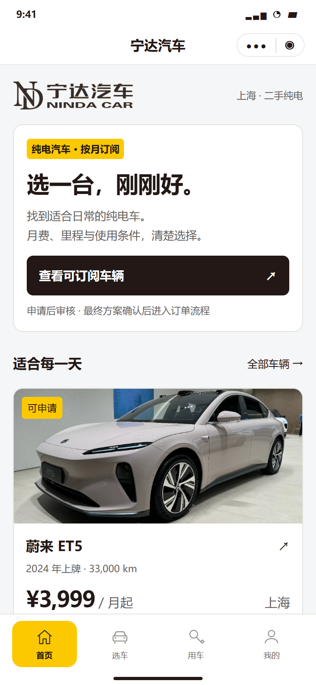
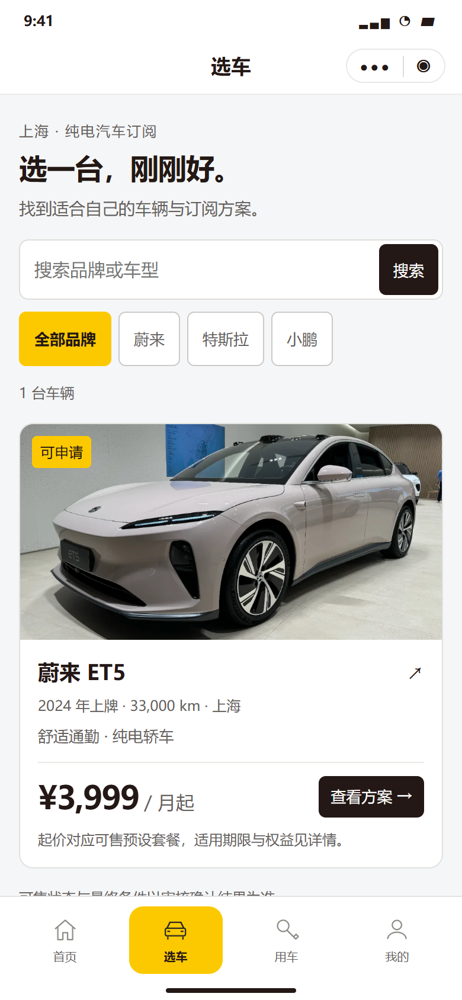
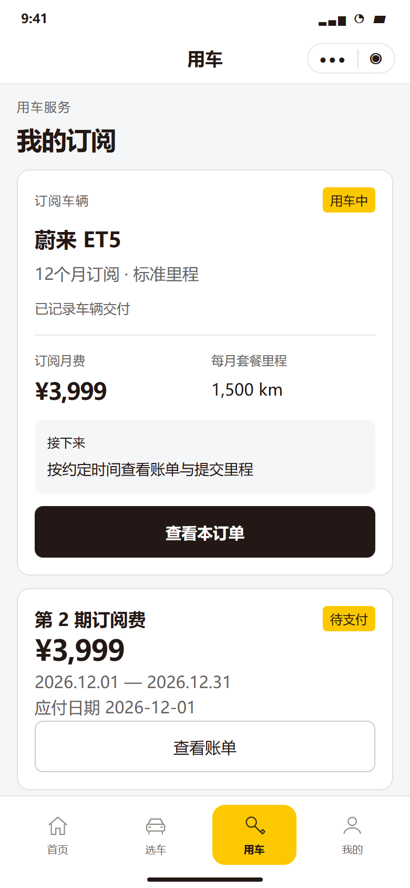
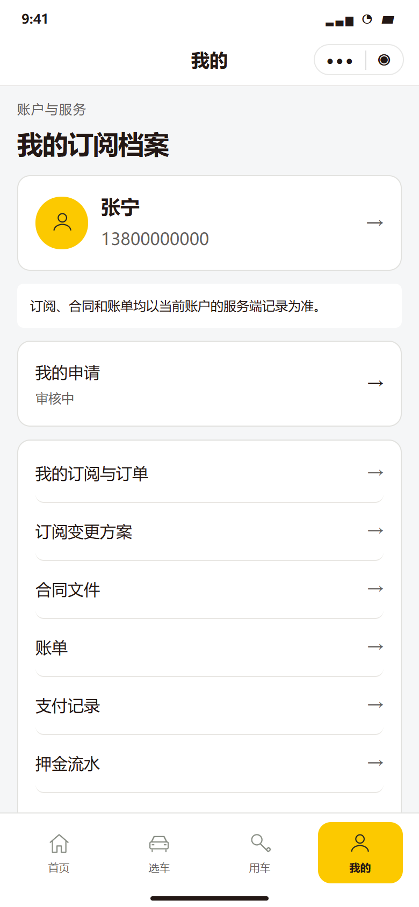

<!doctype html><html lang="zh-CN"><meta charset="utf-8"><style>*{box-sizing:border-box}body{margin:0;background:#e9ebed;font-family:'Microsoft YaHei',sans-serif;color:#231815;padding:32px}header{display:flex;align-items:flex-start;justify-content:space-between;border-top:5px solid #fcc900;padding-top:20px;margin-bottom:28px}h1{font-size:26px;margin:0 0 8px;font-weight:600}.sub{font-size:13px;color:#65615c;line-height:1.8}.stamp{font-size:12px;letter-spacing:2px;padding-top:5px}.grid{display:grid;grid-template-columns:repeat(4,390px);gap:24px;align-items:start}.caption{display:flex;justify-content:space-between;font-size:15px;padding:0 2px 12px}.caption span{color:#65615c;font-size:12px}section img{width:390px;display:block;border:1px solid #d8d8d5;border-radius:12px}footer{font-size:12px;color:#65615c;margin-top:24px;line-height:1.8}</style><header><div><h1>宁达汽车 · 小程序视觉优化</h1><div class="sub">VI 标准黄 #FCC900 · 黑灰操作 #231815 · 沿用现有页面布局</div></div><div class="stamp">VISUAL REVIEW / 02</div></header><main class="grid"><section><div class="caption"><b>首页</b><span>01</span></div></section><section><div class="caption"><b>选车</b><span>02</span></div></section><section><div class="caption"><b>用车</b><span>03</span></div></section><section><div class="caption"><b>我的</b><span>04</span></div></section></main><footer>视觉样稿，未改正式 UI。全部资料、金额与状态为合成示例；车型图为示意，非库存实拍。<br>车型照片 © S5A-0043 / Wikimedia Commons / CC BY 2.0，沿用项目已存设计素材。</footer></html>